Open-source tools for long-form reading, listening, and digital wellbeing. High contrast, no ads, no accounts, no algorithm. Designed for e-ink screens and intentional use. Since 2026, the Reader's family: a whole phone in black and white, text only.
The Reader's family
A phone that reads like a page. Black-and-white, text-only apps: no icons, no colours, no cards, no account. The launcher shows words; the calendar, tasks, notes, books and feeds read like a newspaper; Reader's Detox keeps the social networks out. In the spirit of the Light Phone, on any Android. All of them ship from the F-Droid repository below, in English, French, German, Spanish, Portuguese and Russian. Most also provide standard black-and-white widgets for any other launcher.
Reader's Launcher
v1.16.0 · MIT · com.freedomfighter.readerslauncher
Your home screen as a list of words: apps and categories one per line, a small grid of the apps you use most, and two-line tiles for the time, the weather, your next event, your open tasks, a note, the book you are reading or the word of the day. Fixed pages, no scrolling. Swipe into a book and read it from the home screen.
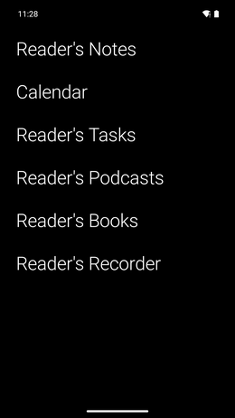
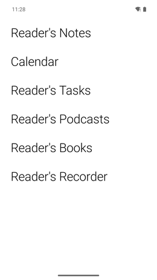
Reader's Calendar
Android v1.11.0 · Desktop v1.11.0 · MIT · com.freedomfighter.readerscalendar
A black-and-white calendar for the calendars already on your phone. Week and workdays as time grids where events are solid blocks and white is free time; the calendar an event belongs to is a word, not a colour. The month as a board with the events written in the days; swipe from month to month. On the desktop — Windows, macOS, Linux — the same layout over CalDAV (Infomaniak, Nextcloud, Radicale) and, with your own OAuth client, your Google account.
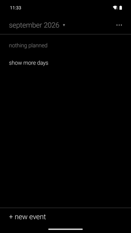
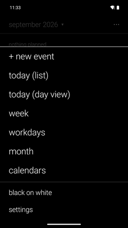
Reader's Tasks
Android v1.5.0 · Desktop v1.6.0 · MIT · com.freedomfighter.readerstasks
Your CalDAV task lists (Infomaniak, Tasks.org, Nextcloud, Radicale) as plain text lists; drag to reorder, and the order is saved on the server. Also on the desktop: Windows, macOS and Linux.
Reader's Notes
Android v1.4.0 · Desktop v1.2.0 · MIT · com.freedomfighter.readersnotes
Plain-text notes. Every note is a .txt file in a WebDAV folder (kDrive, Nextcloud, any server), synced both ways: your computer sees ordinary files. Share text from any app to make a note of it. On the desktop — Windows, macOS, Linux — the same notes in one window, list on the left and page on the right, synced with the phone through the same folder.
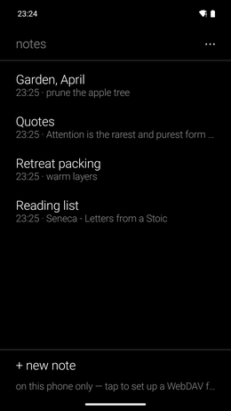
Reader's Books
v1.2.1 · MIT · com.freedomfighter.readersbooks
A reader for e-ink: the shelf as a list, pages that turn with a tap, no scrolling, nothing else on the screen. EPUB, MOBI, FB2 and text files, opened from the app, a file manager or a share.
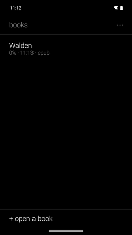
Reader's Bookshop
v1.1.0 · MIT · com.freedomfighter.readersbookshop
Search free ebooks and download them to your phone, for Reader's Books or any reader. Type a title or an author; Project Gutenberg, Standard Ebooks, Wikisource, the Bibliothèque numérique romande, Ebooks libres et gratuits, textos.info and the Internet Archive answer at once. When the author's dates are known, the app tells you whether the work is in the public domain. Anna's Archive stays off unless you switch it on. Searches in six languages.
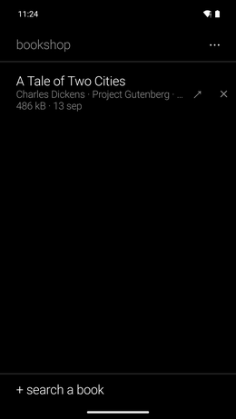

Reader's Recorder
v1.10.0 · MIT · com.freedomfighter.readersrecorder
Record a memo, a lecture or a conversation in one tap. Everything stays on the phone: it transcribes by itself (whisper.cpp built in), evens out the volume of a listening copy, and can write the main points (beta) of what was said. Optionally, recordings and transcripts are exported to a WebDAV folder (kDrive, Nextcloud) — nothing is ever fetched back.
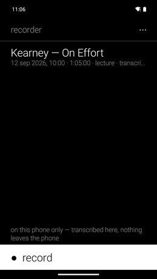
Reader's Podcasts
Android v0.4.5 · Desktop v1.0.0 · MIT · com.freedomfighter.readerspodcasts
A text-only podcast player: channels, episodes, favourites, downloads — no artwork, no store, no recommendations. OPML in and out, so a hundred and forty subscriptions move in one file, and a desktop twin reads the same lists. An episode can be written down on the phone and then translated on the phone, and the text is read while it plays, the line being spoken inverted, a tap on a line sending the sound there.
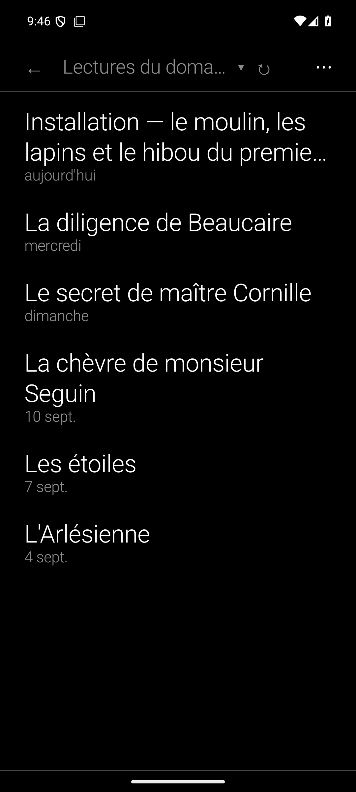
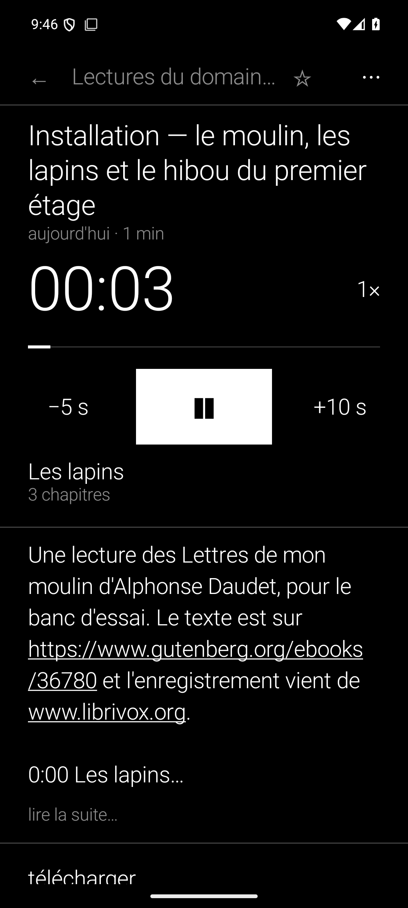
Reader's Audio Player
v1.5.0 · MIT · com.freedomfighter.readersaudio
A black-and-white audio player whose one addition is transcription on the phone: language and quality chosen each time, the text saved as a .txt file any reader opens and, on request, the main points (beta) written at the top. Share the audio or the transcript.
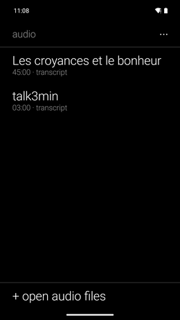
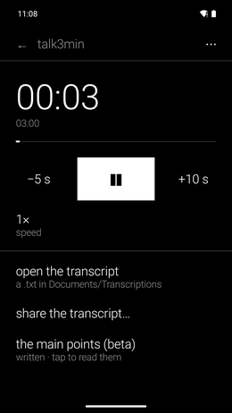
Reader's Mindful Tool
v1.0.1 · MIT · com.freedomfighter.readersmindful
A bowl that rings when you need it: one strike every few minutes until you stop it, a sitting of a set length closed by three bowls, or one or three bowls at fixed times every day. Five bowls or your own recording. It rings on time, even from deep sleep.
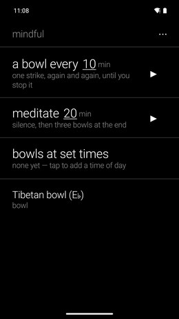
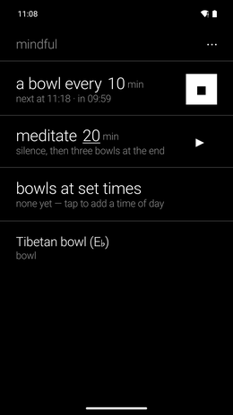
Reader's Feeds
v1.2.0 · GPL-3.0 · com.freedomfighter.readersfeeds
An RSS and Atom reader for e-ink: articles read as clean pages taken from the web, not scrolled. OPML import and export, paid Substacks.
Reader's Detox
v1.7.0 · GPL-3.0 · com.parentcontrol.socialblocker.detox
Formerly Social Detox. Blocks YouTube, Instagram, TikTok, Reddit, X and Substack through a local VPN that refuses their DNS requests: no proxy, no certificate, nothing leaves the phone. Open during the hours you allow, blocked the rest of the day; while it blocks, the sites and the hours are locked, and five maths problems stand between you and stopping it if you want them to. Friction you choose for yourself, not parental control.